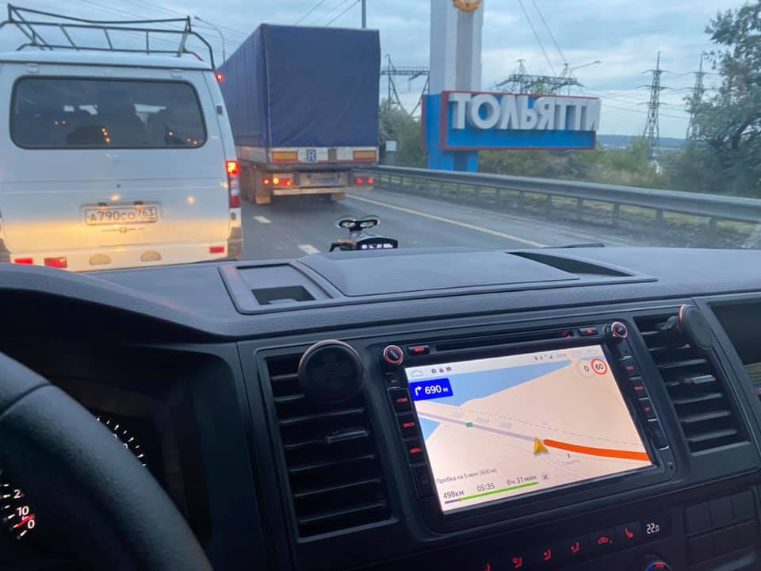

От Кемерова до Новосибирска плюс-минус 250 километров. Когда едешь на машине далеко, в километрах измерять расстояния не очень удобно, километры слишком маленькие. Поэтому я измеряю расстояния в «новосибирсках».
От Кемерова до Омска — 4 новосибирска.
Можно проехать ещё один новосибирск и окажешься в Кургане. Там есть отличная гостиница прямо в центре
Челябинск, который встретится через 3 новосибирска, днём интересней проехать насквозь, а не по объездной.
Ещё один новосибирск по Уральским горам и вы в Уфе. Потом 3 новосибирска до Саратова.
От Саратова до Керчи — ещё 4 новосибирска.
Крым в ширину — всего один новосибирск. Вся — Грузия тоже. 2 новосибирска — Краснодар-Сухуми.
От Кемерова до Москвы — 12 новосибирсков. До Питера — 16.
Без сна я проезжал 8 новосибирсков. Последние 3 уже без удовольствия.
В световой день комфортно ехать до 4 новосибирсков. Но это по Сибири. Если едешь по горам, то может хватить и одного.